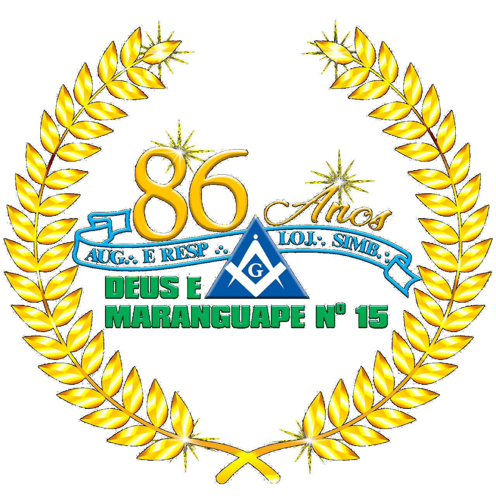
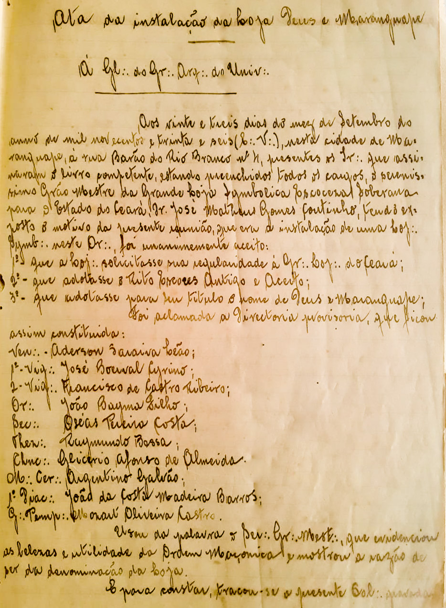

 Transcrição da Ata de instalação À G∴D∴G∴A∴D∴U∴ Aos vinte e três dias do mez de Setembro de mil novecentos e trinta e seis (C∴V∴), nesta cidade de Maranguape, à Rua Barão do Rio Branco nº 4, presentes os IIr∴ que assinaram o livro competente, estando preenchidos, todos os cargos, o sereníssimo Grão-Mestre da Grande Loja Symbólica EScoceza Siberana para o Estado do Ceará, Ir∴ José Matheus Gomes Coutinho, tendo exposto o motivo da presente reunião, que era o da instalação de uma loj∴ symb∴ neste or∴ foi unanimamente aceito:  1º - que a Loja solicitasse sua regularidade à Gr∴ Loj∴ do CE. 2º - que adotasse o Rito Escocês Antigo e Aceito. 3º - que adotasse para seu título o nome de Deus e Maranguape. Foi aclamada uma diretoria provisória, que ficou assim constituída: Ven∴ Aderson Saraiva Leão; 1º Vig∴ José Boerval Cirino; 2º Vig∴ Francisco de Castro Ribeiro; Or∴ João Bayma Filho; Sec∴ Oséas Pereira Costa; Thez∴ Raymundo Bessa; Chanc∴ Glicério Afonso de Almeida; M∴ de Cer∴ Argentino Galvão; 1º∴ Diac∴ João da Costa Madeira Barros; G∴ do Temp∴ Mozart de Oliveira Castro. Usou da palavra o Ser∴ Gr∴ M∴, que evidenciou s belezas e utilidade da Ordem Maçônica e mostrou a razão de ser da denominação da Loja. E para constar, traçou-se a presente Col∴ gravada que sendo lida e aprocada, vae assinada pelas luzes e Ofic∴ Sec∴ Ir∴ Oswald Moreira da Silva Lima - A∴R∴L∴S∴ Porangaba nº2 Transcrição da Ata de Regularização À G∴D∴G∴A∴D∴U∴ Aos vinte e um dias do mez de Dezembro de mil novecentos e trinta e seis (C∴V∴), à Rua Fjalma Dutra nº 40, no Temp∴ da A∴R∴L∴S∴ "Deus e Maranguape", ao Or∴ de Maranguape, onde foi vinda comissão regularizadora, nomeada pelo Ser∴ Gr∴ M∴ da Gr∴ Loj∴ do Ceará, Dr. José Matheus Gomes Coutinho composta dos Pod∴ IIr∴ Henrique Ellery, presidente, Vicente Carvalho de Brito, Oswald Moreira da Silva Lima, Bolivar Ribeiro Pinto Bandeira, Torquato Porto, Estolano Polari Maia, Eurico de Holanda Lima, Manoel Soares Lopes, todos membros off∴ da jurisdição e de acordo com o ATO NÚMERO TRINTA E DOIS, de vinte e um de dezembro de mil novecentos e trinta e seis (E∴V∴), o Ven∴ Ir∴ Henrique Ellery, empunhando o malhete, preencheu os cargos com os demais comissários, ocupando os lugares de 1º e 2º Vig∴, respectivamente, os Ppod∴ Iir∴ Torquato Porto e Estolano Polari Maia. E seguida, tomaram assento ao Trono os Vv∴ Oor∴ Aderson Saraiva Leão e Vicente Carvalho de Brito, sendo então os trabalhos abertos na forma ritualística. A comissão apresentou os documentos exigidos pelo Regulamento Geral, tendo o Pod∴ Or∴ Presidente mandado proceder a leitura da carta constitutiva, pelo Ir∴ Sec∴. O Ven∴ Ir∴ Presidente falou sobre o ato e convidou as Ll∴ e Oof∴ a prestarem o Sag∴ juramento, procedendo-se tudo mais, de acordo com o Ritual. Nada mais havendo a tratar, foram encerrados os trabalhos e para constar, eu Oswald Moreira da Silva Lima, tracei o presente balaústre que, depois de lido e aprovado, vai assinado pela comissão. Asinam: Henrique Elerry, M∴M∴ Presidente Torquato Porto M∴M∴ 1º Vig∴ Estolano Polari Maia M∴M∴ 2º Vig∴ Bolivar Bandeira M∴M∴ Orador Oswald Lima M∴M∴ Sec∴ Pesquisa do Ir∴ Braquehais em 16/10/76. Transcrita em 30/04/2022 pelo Ir∴ Lauriston Trindade. Histórico resumido No dia 23 de setembro de 1936, no Oriente de Maranguape, à Rua Barão do Rio Branco nº 4, reuniram-se trinta e oito irmãos sob a presidência do Sereníssimo Grão Mestre José Matheus Gomes Coutinho e fundaram a Augusta e Respeitável Loja Simbólica Deus e Maranguape nº 15, que foi regularizada conforme ato nº 32 de 21 de dezembro de 1936. Funcionou normalmente até 18 de maio de 1943, data em que abateu colunas e foi incorporada à Loja Liberdade v nº 12, sendo soerguida em 21 de abril de 1972, conforme decreto nº 01/72, estando a Mui e Respeitável Grande Loja Maçônica do Estado do Ceará sob o malhete do Sereníssimo Grão Mestre João Ramos de Vasconcelos César. Inicialmente os trabalhos realizaram-se no palácio maçônico da Grande Loja, no oriente de Fortaleza e em 22 de março de 1974 passaram a realizar-se no Oriente de Maranguape, em sede provisória e a partir de 20 de novembro de 1981 no palácio maçônico Walter Pimenta Lira, sua sede própria, tendo ocorrido a sagração de seu templo em 23 de abril de 1983. Lista de Veneráveis Quadro atual da A∴R∴L∴S∴ Deus e Maranguape Nº 15 Nome Período Aderson Saraiva Leão 1936 a 1937 José Boerval Cirino 1937 a 1938 Jorgelino B. da Silva Prego 1938 a 1939 José Boerval Cirino 1939 a 1940 Aderson Saraiva Leão 1940 a 1941 Jorgelino B. da Silva Prego 1941 a 1942 Plácido Portela Junho a Setembro de 1942 Antônio Zabulon Filho Setembro a Dezembro de 1942 Marcos Augusto Santos Dezembro de 1942 a maio de 1943 Leonam Onofre C. de Lima Abril a Julho de 1972 Antônio Menezes Filho 1972 a 1974 Antônio Menezes Filho 1974 a 1976 Antônio Menezes Filho 1976 a 1978 Marcélio José de Melo 1978 a 1980 José Linhares de Vasconcelos Filho 1980 a 1982 José Vieira de Carvalho Abril a Julho de 1982 José Linhares de Vasconcelos Filho 1982 a 1983 Francisco Wilson Santos 1983 a 1984 Marcélio José de Melo 1984 a 1986 Gumercindo Ramalho Gondim 1986 a 1988 Valdemiro de Souza Lima 1988 a 1990 José Silva Cavalcante 1990 a 1992 José Moisés de Sousa 1992 a 1994 José Moisés de Sousa 1994 a 1996 José Tavares Figueiredo 1996 a 1998 Valdemiro de Souza Lima 1998 a 2000 João Batista Alves 2000 a 2002 Raimundo Nonato Moreira Filho 2002 Francisco José Fraga Pereira 2002 a 2004 Francisco José Fraga Pereira 2004 a 2006 Francisco Flávio Teles Cavalcante 2006 a 2008 Julio Cezar Miura de Oliveira 2008 a 2010 Julio Cezar Moura de OLiveira 2010 a 2012 Pedro Sobreira de Alencar 2012 a 2014 Francisco Nilo Alves de Sousa 2014 a 2016 Tiago Lino Vasconcelos 2016 a 2018 Tiago Lino Vasconcelos 2018 a 2020 Wesley dos Santos Galvão 2020 a 2022 Wesley dos Santos Galvão 2022 - O ano de 2022 A A∴R∴L∴S∴ Deus e Maranguape Nº 15, neste ano, completou 86 anos de fundação e 50 anos de soerguimento de seus trabalhos. Assim, desde 1972, nossa oficina mantém cinco décadas de trabalhos ininterruptos. E nos idos de 1980 e 1990, alguns obreiros de seu quadro acabaram por fundar outras três lojas maçônicas. Duas delas com atividades em Fortaleza e uma, em Maranguape. Durante 21 anos a A∴R∴L∴S∴ Deus e Maranguape Nº 15 e a A∴R∴L∴S∴ Acácia Serrana Maranguapense nº 133 (com fundação em 15 de novembro de 2000), atuaram simultaneamente no município de Maranguape. Ao longo de sua existência, a A∴R∴L∴S∴ Acácia Serrana Maranguapense nº 133 muito contribuiu para a Maçonaria Universal, iniciando, elevando, exaltando e filiando honrados irmãos. O destino, progressivamente, trabalhou na aproximação das duas lojas maçônicas de Maranguape. E era absolutamente frequente que os irmãos se visitassem mutuamente às terças e sextas das reuniões. Na sessão de 29 de março, os obreiros da A∴R∴L∴S∴ Acácia Serrana Maranguapense nº 133 decidiram solivitar transferência para a A∴R∴L∴S∴ Deus e Maranguape Nº 15. Já na reunião de 30 de março, os obreiros da A∴R∴L∴S∴ Deus e Maranguape Nº 15 aceitaram a incorporação. Assim, o Grão-Mestre dos Maçons da Circunscrição da Mui Resp.·. Grande Loja Maçônica do Estado do Ceará, NARCISO DORTA ERNANDES FILHO no uso de suas atribuições e prerrogativas legais, através do ATO 2626 de 29 de junho de 2022, transfere todo o quadro da A∴R∴L∴S∴ Acácia Serrana Maranguapense nº 133 para a A∴R∴L∴S∴ Deus e Maranguape Nº 15, presenrvando todos os títulos dos obreiros. Neste ano de eleições regulares da GLMECE, a A∴R∴L∴S∴ Acácia Serrana Maranguapense nº 133 não lançou chapa para a administração do biênio 2022 - 2024. Assim, o Ven∴ Mestre Jonas Freitas Maciel não concorreria a reeleição e se tornaria o último Ven∴ Mestre da A∴R∴L∴S∴ Acácia Serrana Maranguapense nº 133, que abate colunas e é incorporada à A∴R∴L∴S∴ Deus e Maranguape Nº 15. Um fato curioso é que o Ven∴ Jonas Maciel estava na turma dos primeiros iniciados pela A∴R∴L∴S∴ Acácia Serrana Maranguapense nº 133, no ano de 2002. Assim, o 33º distrito da GLMECE ficou com as lojas integrantes: A∴R∴L∴S∴ Deus e Maranguape nº 15 e A∴R∴L∴S∴ Deus e Maracanaú nº 78. Já no segundo semestre deste ano, nosso distrito recebeu a inclusão da A∴R∴L∴S∴ Verdade e Justiça nº 161.